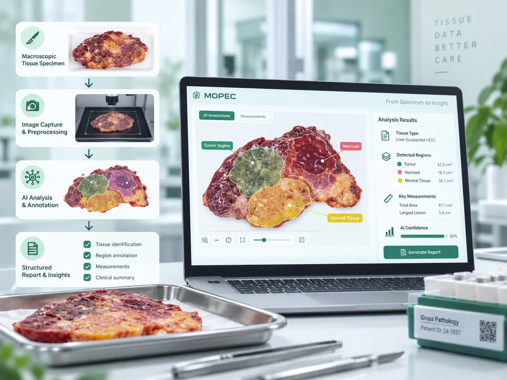

Company-Sponsored Senior Project
Mopec Tissue Insight
Early-stage senior design work exploring AI support for future gross tissue analysis and imaging workflows.
Current focusDataset review, workflow planning, and training / validation / test structure.
Technical themesMedical imaging, medical AI, documentation, and team collaboration.